文章類型
商業分析文
Dcard、Facebook 與網站商業分析文整理。
新藥上市才 7 個月，公司就聲請清盤：真正的死亡谷在核准之後
ORLYNVAH 上市第一季只有 40 萬美元淨產品收入，同季銷售、一般與管理費約 650 萬美元；約七個月後，Iterum 聲請清盤。Karyopharm 與 Theravance 的情況不同，卻共同顯示新藥核准後，收入、成本、管線與資本四座時鐘會同時啟動。
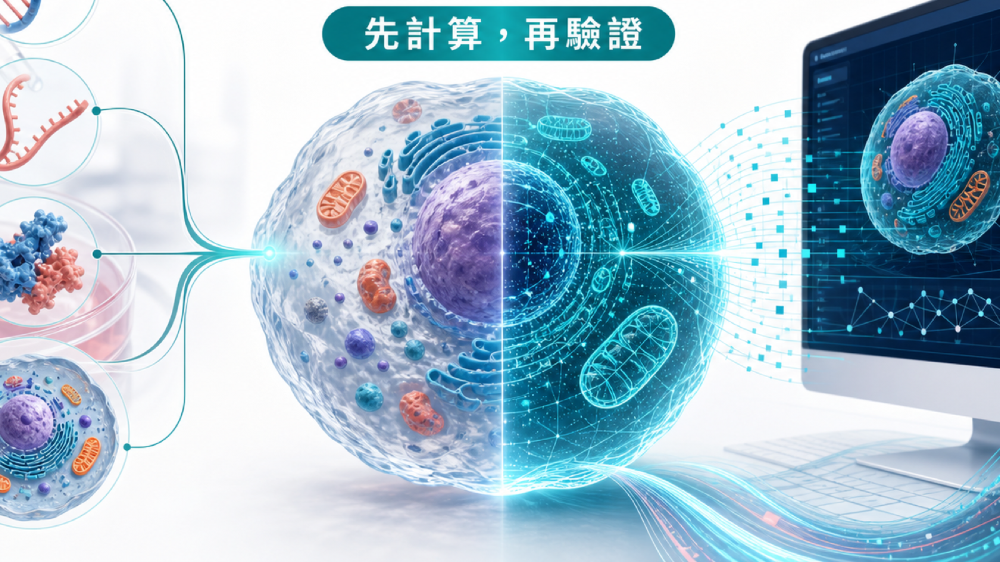
新藥能先在電腦裡試？「虛擬細胞」來了！
GenBio AI 的 AIDO Cell 嘗試用共享狀態串起 DNA、RNA、蛋白質與細胞表型，並連續模擬基因、藥物與抗藥性擾動。公司基準顯示 31 項指標中有 24 項追平或超越專用模型，但目前只有 K-562、Hep-G2 兩種原型細胞，新預測仍待實體實驗、外部重現與盲測。
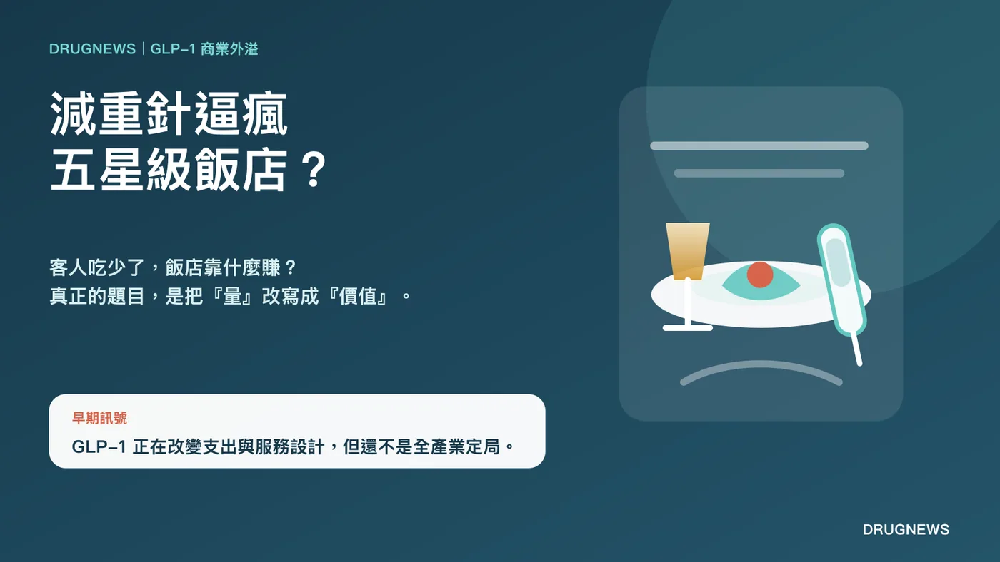
減重針逼瘋五星級飯店？客人吃少了，飯店靠什麼賺？
美國家戶交易研究顯示，採用 GLP-1 六個月後，雜貨支出平均下降 5.3%，高收入家庭下降 8.2%；部分高端飯店也開始測試小份餐、高蛋白、無酒精飲品與健康陪伴服務。真正的商業題目，不是客人吃少了多少，而是飯店能否把食物的量重新翻譯成服務、價格與回購。
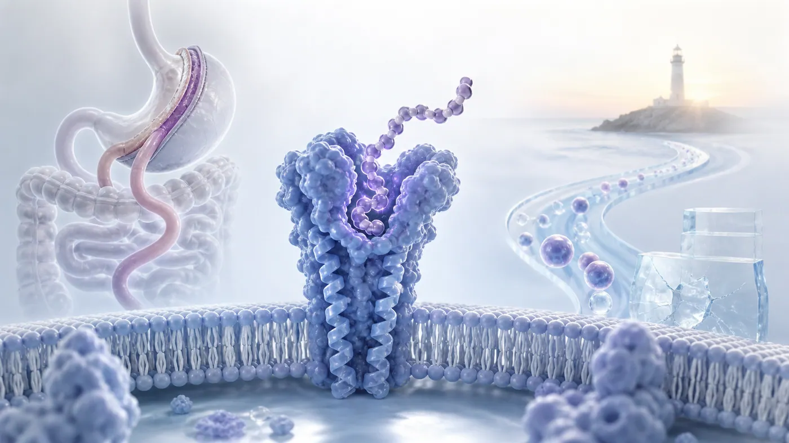
減重手術後，吃飯竟可能昏倒？一款新藥讓 Amylyx 暴漲 64%！
Amylyx 的 avexitide 在 LUCIDITY 三期試驗中，讓第二級與第三級低血糖事件合併發生率較安慰劑降低 55%，帶動股價單日上漲約 64%。本文拆解 PBH 的 GLP-1 機制、三期證據、3,510 萬美元資產收購、5 億美元募資，以及核准與商業化前仍須跨越的關卡。

胰臟癌終於被撬開一道縫！FDA 提前 6.5 個月批准首款廣譜 RAS 新藥
FDA 提前 6.5 個月核准 Revolution Medicines 的 RASONQUE，用於特定轉移性胰臟腺癌成人。本文拆解 RASolute 302 的生存數據、RAS(ON) 技術、Revolution 十一年轉向史，以及藥證之後的定價、給付、安全性與全球商業化考驗。
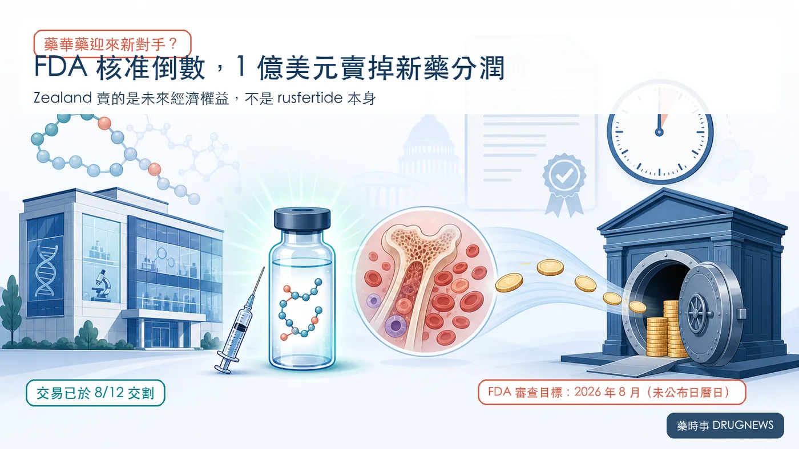
藥華藥迎新對手？1 億美元賣分潤
Zealand Pharma 以總對價 1 億美元出售 rusfertide 的里程碑與 1% 全球淨銷售權利金，交易不是出售藥物控制權。本文拆解 Zealand、Protagonist 與武田的不同經濟位置，並分析 rusfertide 對藥華藥 BESREMi 的競爭、互補與治療分層。

DNA 不是 AI 製藥的輝達，至少現在還不是
Twist Bioscience 的 AI 輔助藥物發現訂單與 DSPS 營收快速成長，但需求增加、單位價值與產業壁壘不是同一件事。真正稀缺的，可能不是單一 DNA 合成步驟，而是能把海量序列轉成蛋白質、功能數據並回饋模型的整座濕實驗工廠。
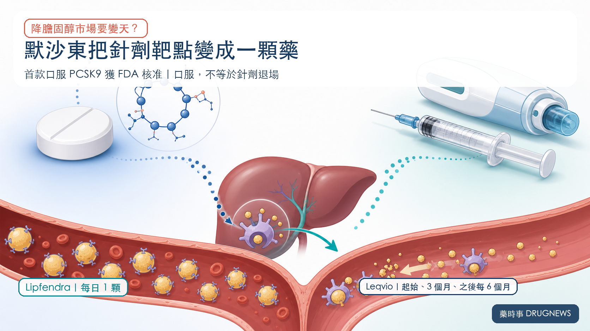
默沙東口服藥殺進「降膽固醇針」市場，誰會被搶走？
FDA 核准首款每日口服 PCSK9 抑制劑 Lipfendra，兩項第三期試驗在第 24 週降低 LDL-C 56% 與 59%。但口服不等於針劑退場：心血管硬終點、每日空腹依從性、保險准入與台灣核准，才會決定市場如何重切。
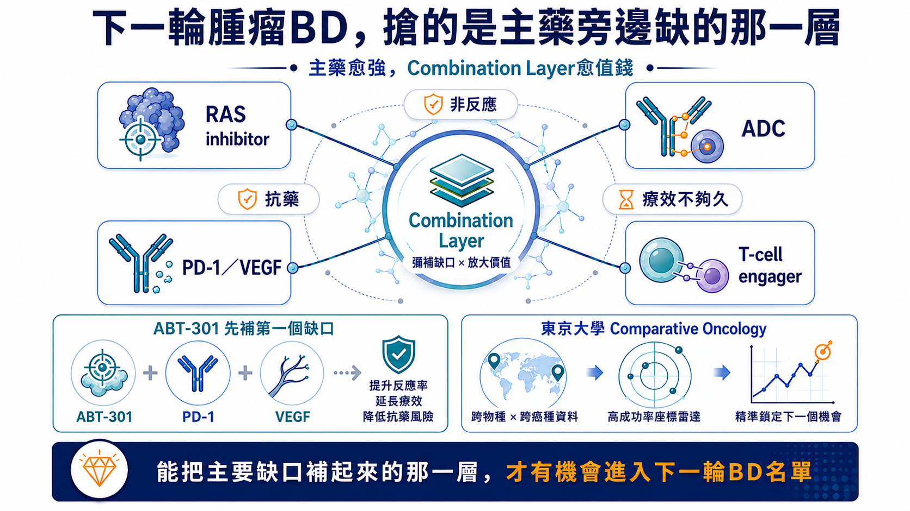
主藥越強，旁邊缺的那一層越值錢：安邦ABT-301能否進入下一輪腫瘤BD名單？
大藥廠正為主藥旁的增量療效付費。安邦ABT-301已完成Phase I，接下來由CRC三聯的療效、劑量持續性、耐久性與biomarker決定其能否走向Combination Layer與大型藥廠合作。
核藥史上最大併購：Curium 與 Lantheus 合併，改寫的不只是交易金額
6 月官網追蹤的 Curium–Lantheus 70 億美元收購傳聞，已在 8 月 3 日推進為最終合併協議：每股 102.50 美元現金加最高 12 美元 CVR，總交易價值最高約 80 億美元。真正被整合的是核素、製造、配送、診斷、治療與美國院端網絡。
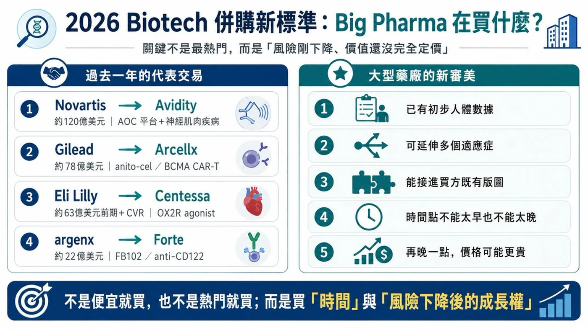
Biotech 下一筆重磅併購，會落在誰身上？
2026 年的生技併購資金，正集中到臨床風險開始下降、商業價值尚未完全定價的公司。從 Alkermes、Dyne、First Tracks、Legend 到 Sail，再回看國邑與仁新，真正值得追的是人體概念驗證、平台外延、商業化距離與買方策略契合度。
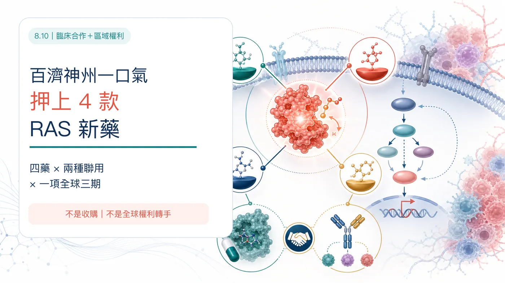
百濟神州一口氣押上 4 款 RAS 新藥
百濟神州一次接進四款成熟度不同的 RAS(ON) 資產、兩條候選聯用路線與一項全球註冊三期。真正值得追的不是四藥相加，而是區域權利、開發分工與選擇權如何替雙方搶時間。
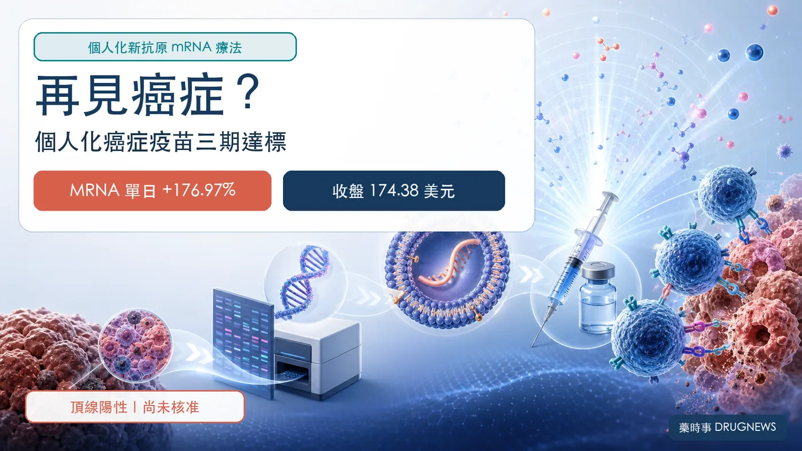
再見癌症？癌症疫苗來了！莫德納單日暴漲176.97%
INTerpath-001 第三期頂線結果讓莫德納股價單日上漲 176.97%。真正被重新估價的，不只是一款黑色素瘤療法，而是個人化設計、製造、質控與臨床交付能否成為可擴張的平台。
輝達殺進製藥業！BMS 搶 576 顆 GPU，禮來砸 10 億美元
BMS 準備部署依 NVIDIA 規格推算共 576 顆 Rubin GPU，禮來與 NVIDIA 五年共同投入上限 10 億美元；真正的競爭不只在算力，而在能否把專有資料、濕實驗與臨床證據接成研發閉環。
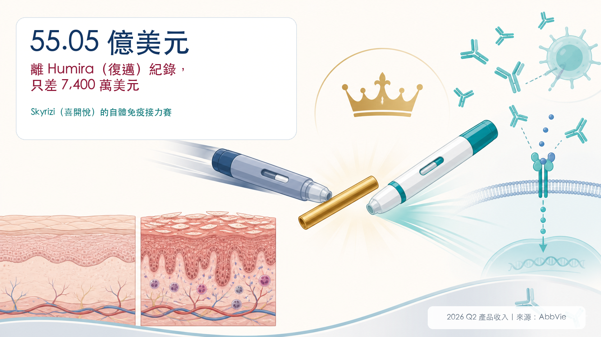
55 億美元只差一步：Skyrizi 要接棒 Humira 當自體免疫藥王？
Skyrizi 2026 年第二季收入達 55.05 億美元，距 Humira 的歷史單季高點只差 7,400 萬美元；真正的接班考驗，是療效、治療負擔、多適應症與支付能力能否一起延續。
一季狂賣 230 億美元，禮來卻急著買下一個藥王
Tirzepatide 讓禮來同時吃下糖尿病與減重兩個大市場，但收入集中、價格壓力與下一代產品接班，才是市場真正該看的投資問題。
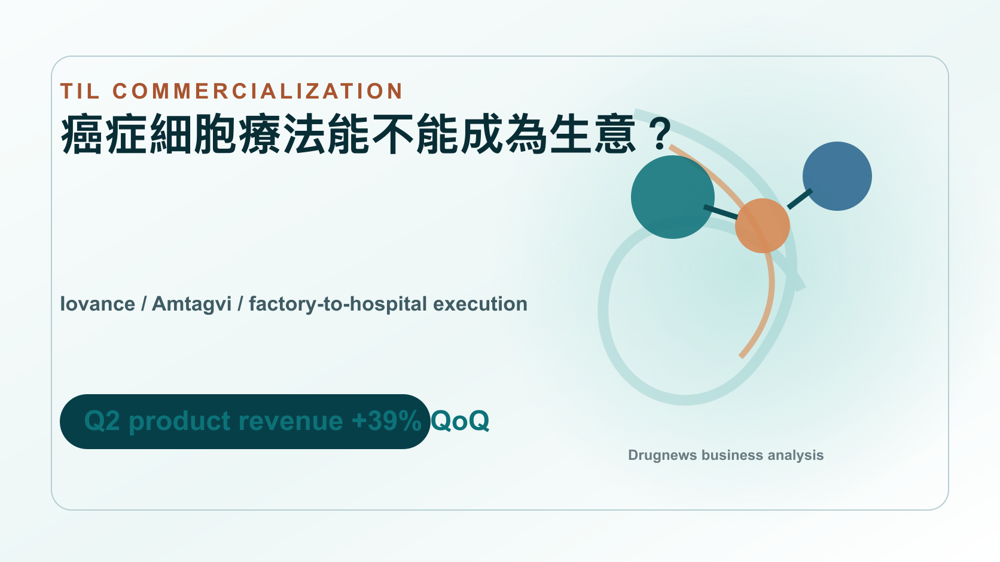
營收跳增 39%，還是虧了 4,700 萬美元：癌症細胞療法翻身了？
Iovance 的 Amtagvi 第二季營收明顯反彈，但真正要驗證的不是 TIL 是否有療效，而是個人化細胞療法能否被做成可複製、可支付、可放大的醫療服務。
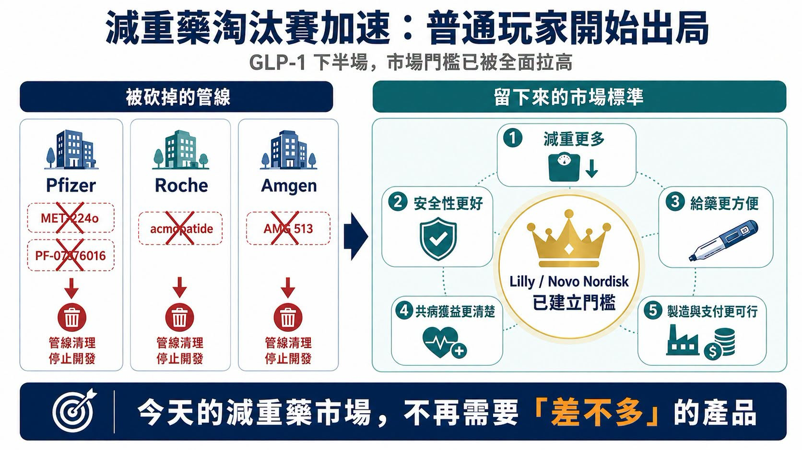
百億美元搶來的減肥藥，輝瑞冤大頭又丟掉了？
Pfizer、Roche 與 Amgen 同步清理缺乏差異化的肥胖症管線，顯示 GLP-1 下半場的門檻已從「有藥可做」升高為療效、安全、便利性與商業化能力的全面競爭。
GSK 砸 20 億美元買止咳新藥，三期卻翻車！
GSK 約 20 億美元收購 BELLUS Health 後，camlipixant 的 CALM-1 達標、CALM-2 卻未能複製。這場第三期落差揭示：二期訊號、患者感受與可重現性必須一起過關。

這家台灣Biotech正在打造人體內奈米火箭
小核酸藥物的競爭正從 RNA 序列設計走向肝外遞送；智新生技以 EV 與 LNP 平台切入肺部與呼吸道，挑戰小核酸下半場最值錢的問題：能否真正抵達病灶。
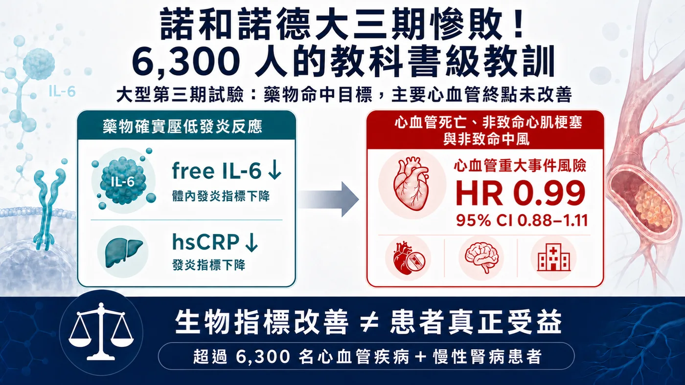
諾和諾德大三期慘敗！6,300 人的教科書級教訓
ZEUS 超過 6,300 人卻交出 HR 0.99：ziltivekimab 壓低 free IL-6 與 hsCRP，卻沒有證明能降低三點 MACE。這不是抗發炎假說死亡，而是 biomarker 不能替患者硬終點預支成功。
美國砸 12 億美元，想用 AI 把新藥研發快一倍！
美國以 Bio Genesis Mission 串起超算、生醫資料、AI 代理、自動化實驗、臨床與監管能力；真正的成敗不在模型口號，而在資料治理、實驗重現與患者轉譯能否形成閉環。
20年後，HDAC抑制劑終於找到真正的位置？ABT-301能否成為下一代聯合治療骨幹
Chidamide以pMMR大腸癌44% ORR與黑色素瘤第三期PFS達標，重新降低HDAC抑制劑的類別風險；安邦ABT-301接下來必須用治療窗口、三聯可組合性與人體免疫機轉，證明資產差異。
禮來領頭，大藥廠半年豪砸 1,300 億美元搶時間！
2026 年上半年生技製藥併購總額約 1,300 億美元，買家偏向臨床後期與接近上市的資產。這一輪不是全面牛市，而是大藥廠在專利懸崖前，用交易結構與現金購買可計算的開發時間。

嬌生口服藥首季 1.8 萬張處方，針劑飯碗要被搶了？
ICOTYDE 上市後第一個完整季度累積逾 18,000 張處方。口服 IL-23R 胜肽已取得進入高療效市場的資格，真正的商業答案仍取決於續方、支付品質、長期留存與多適應症。
不賣給大藥廠，4 家生技公司憑什麼自己做大？
argenx、Insmed、Incyte 與 Revolution Medicines 選擇保留獨立經營權。真正的不賣資格，來自產品證據、現金引擎、第二曲線、全球執行與不交出控制權也能取得資金的能力。
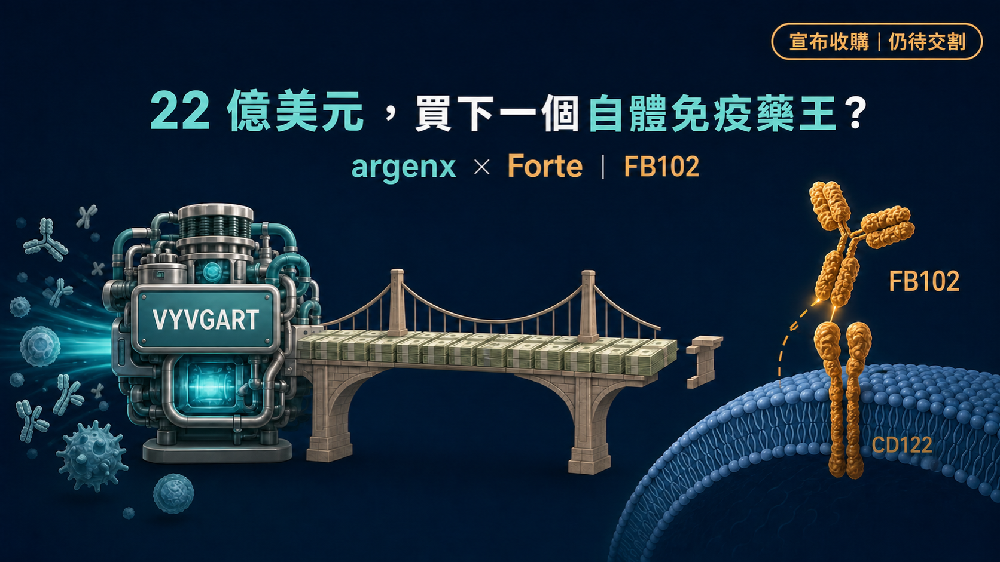
22 億美元，買下一個自體免疫藥王？
argenx 擬以 22 億美元現金收購 Forte，把早期抗 CD122 抗體 FB102 納入管線。真正的考題不是一組一期 p 值，而是 VYVGART 的單品成功能否被複製成可重複的公司能力。
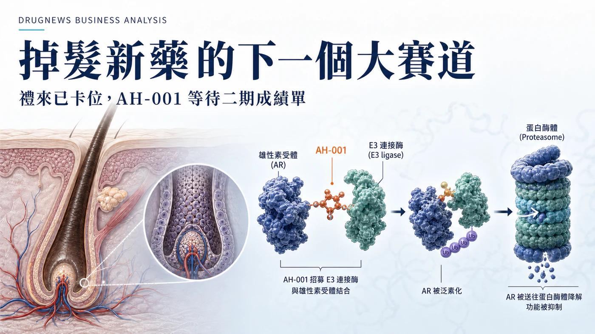
投資人請注意，下一個減肥藥級別賽道來了！
禮來用 4,000 萬美元卡位掉髮新藥；當美國約 8,000 萬名患者仍受限於兩款老藥，安宏 AH-001 的二期數據可能成為下一次全球資產重估關鍵。
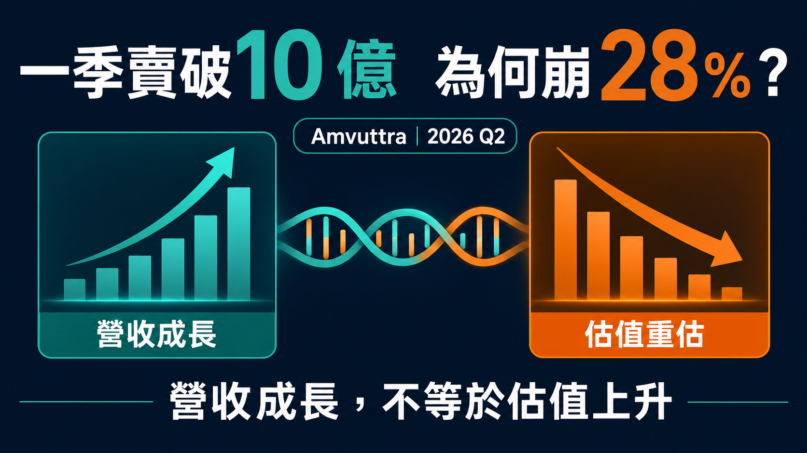
一季賣破 10 億，Alnylam 為何崩 28%？
Amvuttra 單季銷售突破 10 億美元，Alnylam 卻下修 TTR 指引並重挫 28%。真正被重估的不是 RNAi 技術，而是積壓需求退潮、收入集中與下一個商業支柱的時間差。
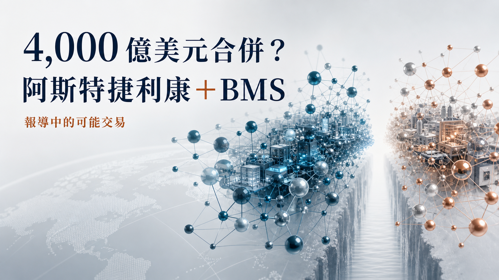
超級大藥廠 4,000 億美元合併？阿斯特捷利康＋BMS！
Financial Times 報導 AstraZeneca 與 BMS 曾探討結合，合計市值接近 4,000 億美元。這不是已簽交易；真正的產業問題是 2030 成長、Eliquis／Opdivo 獨占期、腫瘤管線重疊、反壟斷與整合能否買到時間。
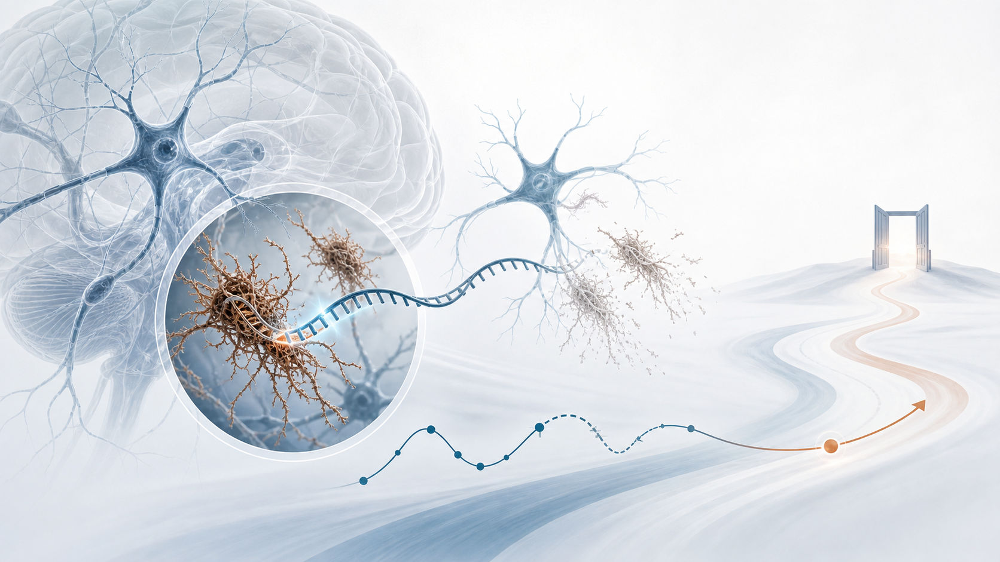
Tau 拿到補考資格：Diranersen 主終點失敗，為什麼 Biogen 仍要進三期？
CELIA 未達預設劑量反應主要終點，最低劑量卻在 CDR-SB 看到 26% 惡化減緩，CSF total tau 與 Tau PET 也同向下降。這些訊號足以讓 Biogen 與 Ionis 規劃三期，還不足以宣布 Tau 已成為第二條獲確認的疾病修飾路線。
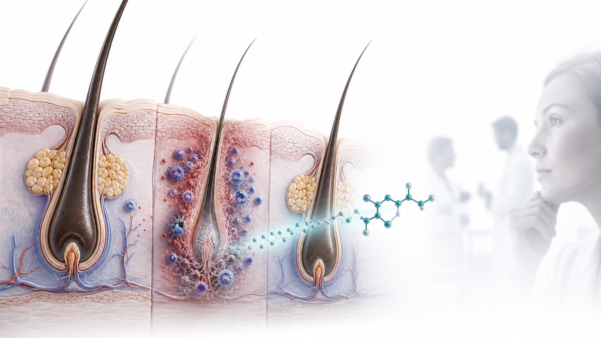
鬼剃頭新藥，先別封神
33 人、單臂、開放標籤的 Phase 2a 資料讓 Q32 Bio 股價近乎翻倍；真正的問題是療效能否重現、停藥後能否維持，以及安全性是否足以改變 JAK 抑制劑的臨床位置。

安邦生技：免疫治療的「星鏈計畫」
一顆台灣小分子，有機會把三百億美元級PD-1藥王送進九成五患者仍無法受益的治療盲區嗎？
Xtandi 之後，安斯泰來靠誰？從單一明星藥到腫瘤平台的四道驗證門
Xtandi 仍主導安斯泰來腫瘤收入；Padcev、Vyloy 與下一代 CLDN18.2 資產能否在 LOE 後形成可重複的產品平台，才是下一段考題。
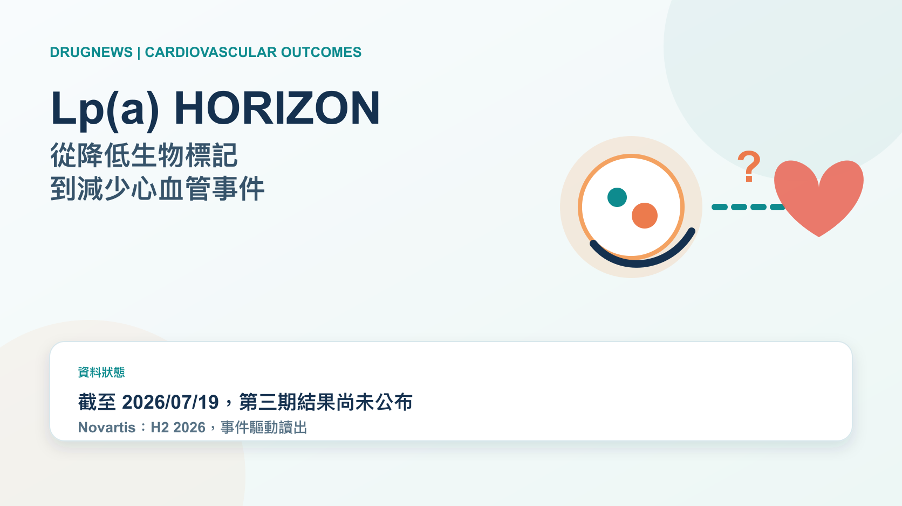
HORIZON：Lp(a) 降了，心梗會少嗎？
Pelacarsen 已證明能大幅降低 Lp(a)，但 HORIZON 真正要回答的是：在標準治療之上，生物標記下降能否轉成更少的心血管死亡、心肌梗塞、中風與緊急再血管化。

T 細胞耗竭卡住 PD-1、CAR-T 與 TCE：免疫治療下半場，拼的是誰能撐到最後
PD-1、CAR-T 與 TCE 最後都仰賴可增殖、可補充且能持久的 T 細胞戰力。本文從耗竭分化、產品工程與臨床資料，拆解免疫治療下半場的真正競爭門檻。
半年千億，買的是時間
2026 上半年生醫併購轉熱，但 BioSpace 的 52 筆與 IQVIA 的 42 筆不能硬拼。真正的主線，是專利懸崖迫使大藥廠用現金購買可計算的臨床時間。

羅氏的隱藏底牌：19 個新分子排隊接棒，下一個成長週期怎麼長出來？
羅氏 2025 年製藥銷售 476.69 億瑞士法郎，Ocrevus、Hemlibra 與 Vabysmo 已撐起約三分之一收入。真正值得追的不是 19 個新分子的總數，而是 giredestrant、fenebrutinib、減重、阿茲海默症與蛋白質降解資產能否沿既有臨床、診斷與商業通路準時接棒。
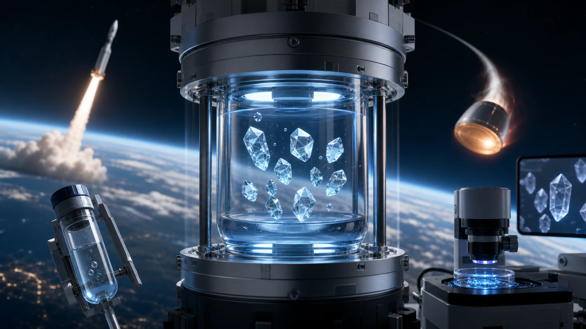
SpaceX 上太空，錢在晶體裡？微重力製藥的第一桶金
SpaceX 讓低軌往返逐漸有了班次，但火箭不是新藥公司。本文從 Keytruda 結晶、SpaceMD、Varda、英國監管與台灣任務，拆解微重力製藥能否通過重複、放大與監管三道商業考驗。
Biotech 不賣，憑什麼？五張門票決定它能否長成 Biopharma
被收購不是 Biotech 唯一的成功終點。本文以 argenx、Insmed、Incyte 與 Revolution Medicines 為四個截面，檢驗產品證據、現金引擎、第二曲線、全球執行與融資選項，並拆解保留控制權的真實成本。
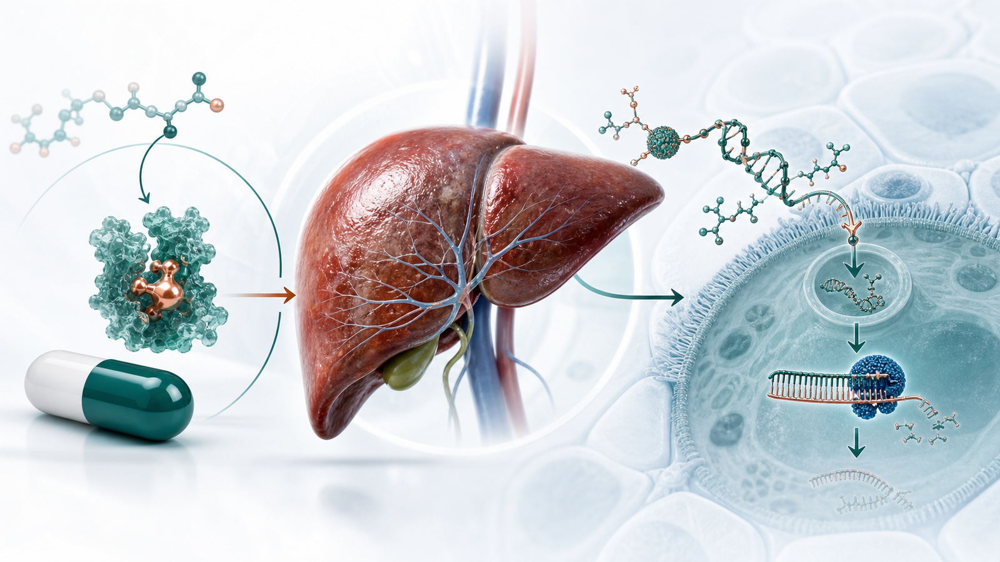
聯手巨頭卡位 MASH：Madrigal 把 Rezdiffra 做成基石藥，小核酸開始接棒
Rezdiffra 已把 MASH 市場與商業化基礎設施打開；Madrigal 再以 Ribo 六條 siRNA 管線與 Arrowhead ARO-PNPLA3，建立基石藥加精準聯用矩陣。

動物實驗不是消失，而是藥物研發規則開始換代
CDE 的 NAMs 先鋒計畫為藥企與方法開發者開出雙軌入口；真正的考題是可重複、可驗證且被監管接受的人體相關證據。

當 ADC 走進自體免疫：不是殺得更狠，而是調得更準
自體免疫 ADC 的價值不在把腫瘤細胞毒 payload 搬到免疫細胞，而在把 glucocorticoid、ASO、siRNA 等強效免疫調節作用定向送到真正需要干預的細胞；LFD-200 的早期人體訊號，是這條路第一次重要的機制驗證。

又一次RevMed 直接掀桌，胰臟癌進入 RAS 組合療法時代
Daraxonrasib 已用第三期總生存期資料抬高胰臟癌 RAS 賽道門檻；zoldonrasib 與 pan-RAS 或化療的早期組合訊號，則把競爭從單藥推向治療生態系。
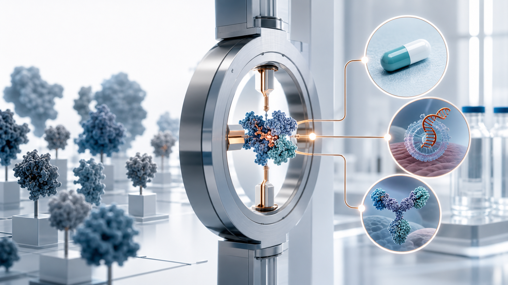
百億美元併購新狂潮
Vertex 以約 100 億美元收購 Crinetics，映照 Big Pharma 併購審美的轉向：不再只買規模或熱門平台，而是買細分市場統治力、技術代差與商業確定性。
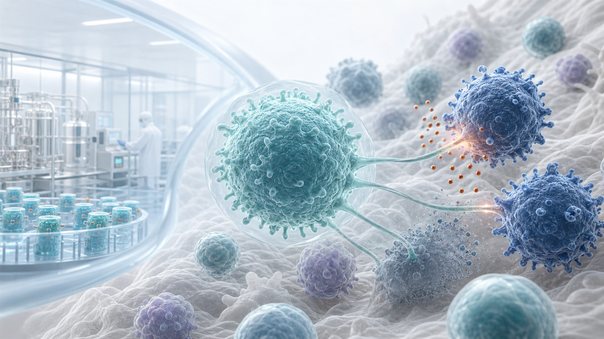
諾貝爾獎後，Treg 第一個獲批藥還不能急著喊：真正的考題是免疫耐受怎麼做成產品
諾貝爾獎照亮 Treg 科學，但產業價值要看免疫耐受能否被做成可放行、可追蹤、可定價、可複製的產品，而不是急著追逐未經核實的第一款獲批敘事。
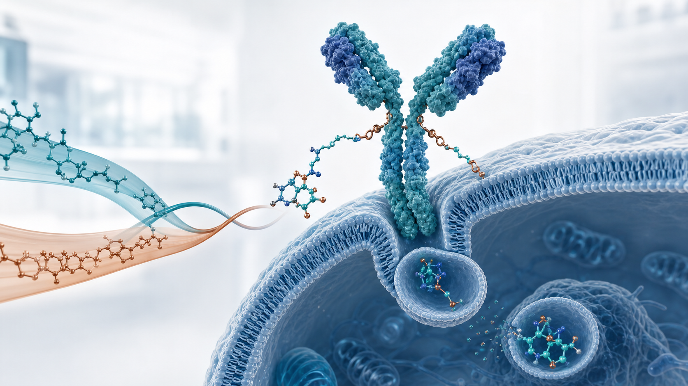
ADC 下一場戰爭：諾華 15 億美元買 Myricx，真正搶的是新型 payload
諾華最高 15 億美元收購 Myricx，真正買下的不只是兩條 ADC 管線，而是可能改寫安全窗、耐藥與平台估值的新型 NMTi payload。

大模型公司走進 AI 製藥：Anthropic 推出 Claude Science，模型公司開始把藥物研發當成真實戰場
Anthropic 推出 Claude Science 並啟動藥物發現計畫，顯示大模型公司正從科研工具走向真實研發工作流；AI 製藥最終仍要用實驗、臨床資料與可交易資產證明價值。

先贏不是贏：Roche divarasib 把 KRAS 賽道推進世代淘汰戰
Roche 的 divarasib 在頭對頭三期試驗中擊敗第一代 KRAS G12C 抑制劑，代表 RAS 賽道已從證明可成藥，進入用臨床硬終點淘汰上一代產品的競爭。
社恐神藥三期踩煞車：Fasedienol 不是輸在故事，而是輸在 CNS 新藥最難證明的一格
一款藥最迷人的時候，常常也是它最危險的時候：市場先愛上故事，臨床才慢慢追問證據。

痛風新藥被 FDA 打回票：NASP 沒輸在療效，而是卡在製造可信度
FDA 並未指出影響 NASP 核准可能性的臨床療效或安全性問題，真正要求補強的是 CMC 控制策略與委託製造設施缺失。這封 CRL 提醒投資人：越接近上市，製造可信度越是藥品價值的一部分。

日本為什麼長不出全球級 Biotech？問題不在科學，而在產業生態
日本不是缺少科學，也不是缺少大藥廠，而是缺少把大學技術、人才、資本、臨床與 BD 串成全球級 Biotech 的連續生態。

GLP-1 下半場：dorzagliatin（多格列艾汀）想解決的，不是減重更猛，而是長期用得住
GLP-1 競爭進入長期維持與聯用下半場，dorzagliatin 的價值不在取代減重藥，而是可能成為代謝治療的可持續底座。

【輝瑞 ADC 賭局：430 億美元買下 Seagen 之後，為什麼 3SBio 的 PD-1/VEGF 雙抗變成新支點？】
sigvotatug vedotin Phase III 單藥失利後，輝瑞的 430 億美元 Seagen ADC 賭局正轉向 3SBio PD-1/VEGF 雙抗與聯合療法底座。

通用型 CAR-T 的 2026 從低谷回暖
邏輯很簡單：傳統自體 CAR-T 需要取出患者自己的 T 細胞，送到工廠改造、擴增、檢驗，再回輸到患者體內。療效可以很強，但等待時間長、成本高、製程複雜，病情進展太快或 T 細胞品質太差的患者，常常等不到治療。

半年併購 1,340 億美元：Big Pharma 到底在搶什麼？
2026 年才過一半，全球製藥業的併購節奏已經快到讓人有點恍神。

美國 HHS 啟動 Operation TrialBlazer：臨床試驗規則要變了，新藥競爭也要變了
2026 年 6 月 22 日，美國衛生與公共服務部，也就是 HHS，啟動了一項名為 Operation TrialBlazer 的部門級臨床試驗改革計畫。

拒絕被併購的 RevMed：Biotech 的獨立時代
圍繞 Revolution Medicines（RevMed）的併購傳聞，一直沒有真正停過。
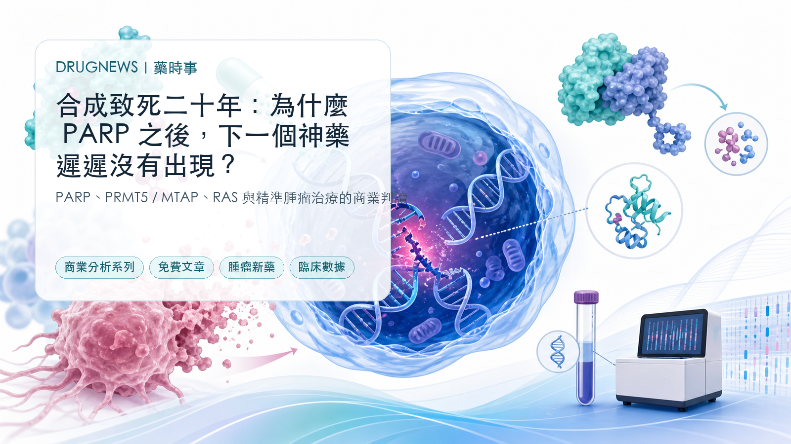
合成致死二十年：為什麼 PARP 之後，下一個神藥遲遲沒有出現？
2005 年，《Nature》兩篇經典研究把 BRCA／PARP 這組關係推上舞台。
摒棄「鐵拳教育」：ADHD 新藥 centanafadine IIIb 期成功，上市只差臨門一腳
Otsuka 的 ADHD 新藥 centanafadine 公布成人 ADHD 合併焦慮症 IIIb 期積極結果，FDA 已接受 NDA 並給予優先審查。這不只是新藥進度，也反映 ADHD 治療正在從單一路徑走向更多機制與病人分層。
GSK 上強度：106 億美元買下 Nuvalent，不只是補肺癌管線，而是重返腫瘤牌桌
2026 年 6 月，GSK 宣布以 106 億美元全現金收購 Nuvalent，收購價格為每股 124 美元。這筆交易不是小修小補，而是新任 CEO Luke Miels 上任後，替 GSK 腫瘤版圖打下的一記重拳。
美股迎來史上最大 Biotech IPO
台股生技板塊還在低谷裡掙扎，美股生技市場卻突然打出一個極端反差。
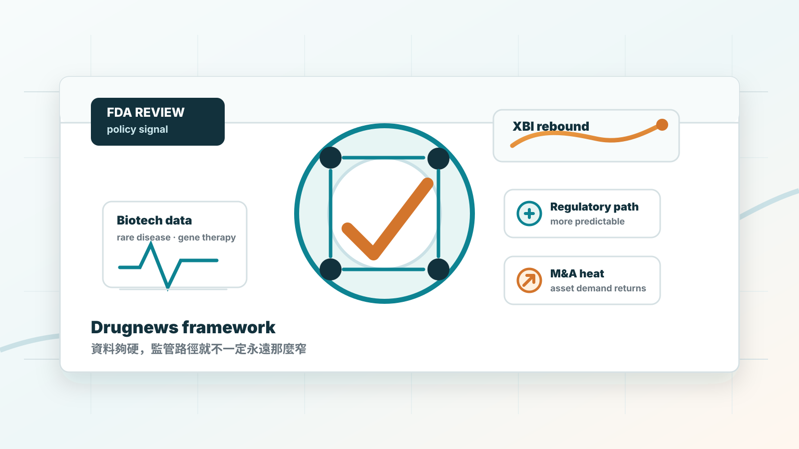
FDA 風向變了：Biotech 反攻訊號，正在從監管端亮起
代表中小型 Biotech 的 XBI（SPDR S&P Biotech ETF）近期走勢強勁，資金也重新流入。照理說，在利率仍未完全放鬆、風險資產仍會被折現率壓制的環境下，高波動的 Biotech 不應該是最輕鬆的族群。

胰臟癌再爆：RAS 抑制劑之後，PRMT5／MAT2A 聯合療法把想像空間再打開
胰臟癌正在進入 RAS 抑制劑與 PRMT5／MAT2A 合成致死聯合療法的新階段，市場開始重新評估 daraxonrasib 作為治療骨架的價值。

神藥 猛健樂 Tirzepatide 進軍自體免疫，只差臨門一腳？
它不像急性感染，用藥幾天或幾週就結束。類風濕性關節炎、乾癬、乾癬性關節炎、發炎性腸道疾病、氣喘、異位性皮膚炎，這些疾病往往跟著患者一輩子。

邁向「寵物醫療界羅氏」的寶泰生醫
當毛孩高齡化趨勢推動癌症、心臟病與自體免疫等重症治療的需求升級，市場的長期觀察核心，在於誰能率先打造一座寵物重症新藥平台，成為『寵物醫療界羅氏』。而這一改寫行業格局的答案，正於台灣的一家生技公司加速浮現。

AI製藥，第一藥終於要來了嗎？武田 Zasocitinib 頭對頭打敗 Sotyktu
過去，口服藥在中重度乾癬市場裡，常常扮演的是「方便但療效有限」的角色。真正能把皮膚清得很乾淨的，仍然是 Skyrizi（risankizumab，瑞莎奇珠單抗）、Tremfya（guselkumab，古塞奇尤單抗）、Cosentyx（secukinumab，司庫奇尤單抗）、Taltz（ixekizu…

減重藥「第三名」爭奪戰：禮來 與 諾和諾德 之外，誰能成為下一個代謝巨頭？
今年 ADA，也就是美國糖尿病學會年會，減重藥戰場又一次被點燃。
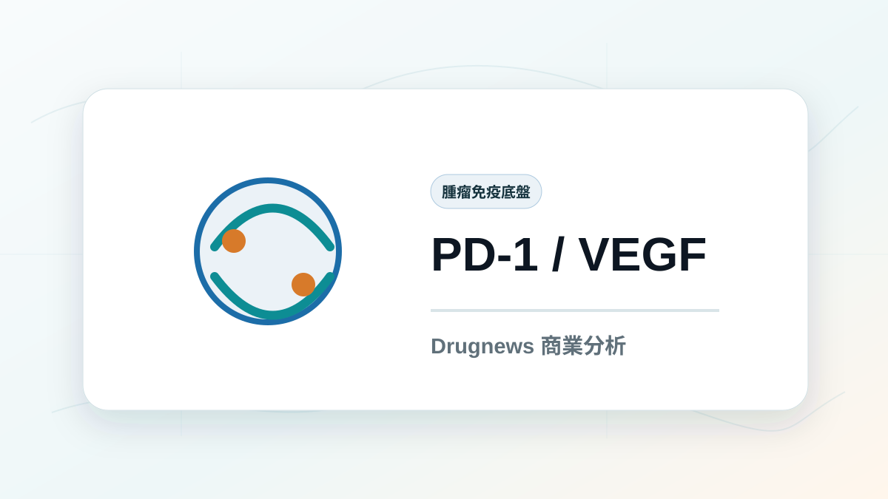
默沙東 對 PD-1／VEGF 雙抗改口：Keytruda 王座還在，但下一代免疫底盤已經逼近
在全球腫瘤藥市場裡，很少有一家公司比 Merck（默沙東）更懂 PD-1。
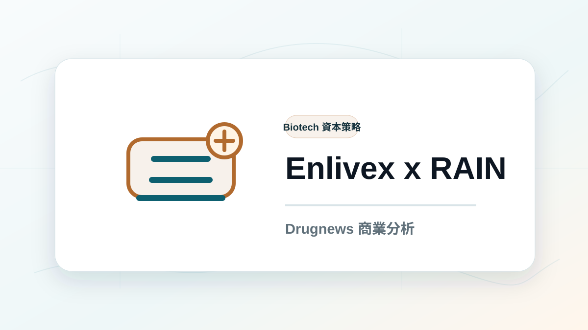
【Enlivex 的幣圈豪賭：Biotech 沒收入，卻靠 RAIN 代幣賺出 12 億美元帳面利潤】
一家臨床階段 Biotech，沒有藥品銷售收入，卻在一年內做出 12 億美元級別的淨利。

GSK 用 106 億美元買下 Nuvalent：真正買的不是三條肺癌管線，而是「耐藥與腦轉移」的下一代解法
2026 年 6 月 9 日，GSK 宣布以 106 億美元全現金收購 Nuvalent，收購價格為每股 124 美元，較 Nuvalent 前一交易日收盤價溢價約 40%。這是 GSK 近年最大型的腫瘤併購之一，也讓它瞬間補上肺癌精準治療版圖中最缺的一塊。
GLP-1「頭對頭」大戰：輝瑞＆諾和諾德必有一戰？
ADA 2026 剛落幕，GLP-1 賽道又被一組頭對頭資料點燃。Ecnoglutide 在 20 週減重數字上勝出，但真正的競爭不只看短期體重下降，而是長期健康結局、耐受性、產品矩陣與全球商業化。

禮來 38 億美元買三家疫苗公司：減肥藥巨頭，為什麼突然回頭買「預防醫學」？
市場現在最熟悉的禮來，是 Mounjaro、Zepbound 背後那個 GLP-1 巨頭。2026 年第一季，禮來營收達到 198 億美元，年增 56%，主要動能還是來自 Mounjaro 與 Zepbound 的放量。簡單說，禮來現在手上最強的現金流，是減重與糖尿病藥物。
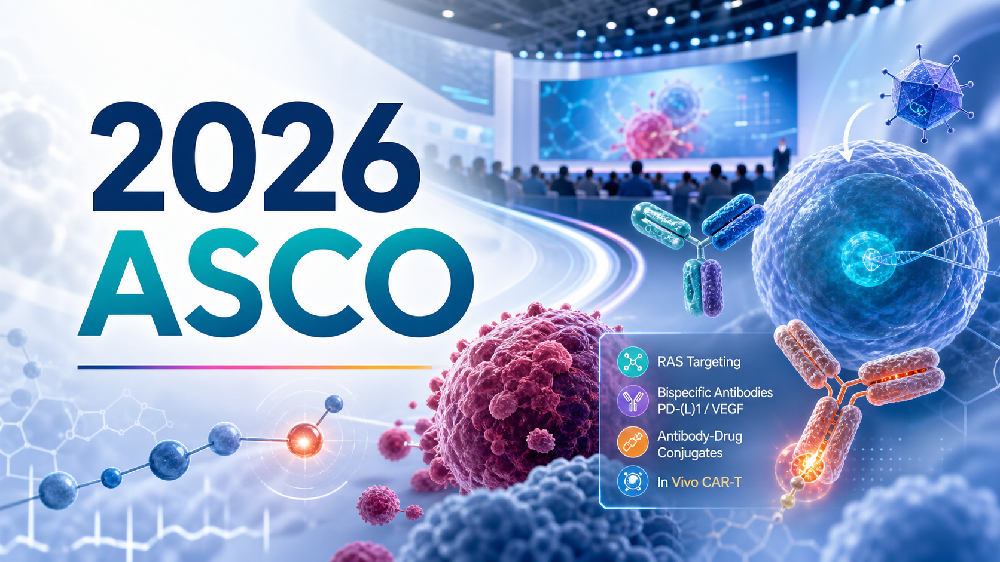
2026 ASCO：生存期翻倍、體內 CAR-T 破局，腫瘤治療正在換一個時代
2026 年美國臨床腫瘤學會年會，也就是 ASCO，最該被記住的贏家，並不是任何一家藥廠，而是癌症患者。

Revolution Medicines 神話：會研發還不夠，會融資才撐得過新藥長跑
2026 年，全球最受矚目的 Biotech 之一，毫無疑問是 Revolution Medicines。這家公司站在一個極難、也極誘人的位置：RAS-addicted cancers。

AI製藥下半場：讓藥活下來
AI 醫藥上半場比生成分子，下半場比成藥存活率。安宏真正值得被看見的，不是單純曝光，而是用 AI + PROTAC（蛋白質降解技術）、實驗閉環與人體轉譯，嘗試形成高資本效率的 clinical asset engine（臨床資產生成引擎）。

盤點整理，AI藥物開發走得如何了？
AI 製藥已從概念走向臨床驗證。這篇盤點 Zasocitinib、GB-0895、Zovegalisib、REC-4881 等代表管線，拆解不同 AI 路線如何轉化成真正的藥物資產。

生技公司估值模型如何計算
方格子同步收錄藥時事 YouTube 影片入口，介紹生技公司估值模型如何計算，適合想建立 rNPV、SOTP 與管線估值基礎的讀者。

減肥成王：GLP-1 正在把全球生技資本重新洗牌
GLP-1 不只是減重藥題材，而是重新配置全球藥廠研發預算、產能投資、BD 談判與生技估值規則的核心變數。

RAS 標靶打開胰臟癌新局：生華科 CX-5461 卡位下一場「抗藥性管理」戰
Daraxonrasib 打開胰臟癌 RAS 標靶時代後，真正的下一場戰爭是抗藥性管理；生華科 CX-5461 的價值在於能否成為 RAS 標靶後時代的免疫增敏與聯合治療候選策略。

生醫公司 IR 不是把簡報變漂亮，而是把管線變成可追蹤的資本市場故事
好的 IR 內容不是宣傳話術，而是把臨床、CMC、監管、商業化與對標公司轉成投資人可以追蹤的節點。

70億美元核藥併購傳聞：Curium想買Lantheus，真正買的是一張核藥時代的入場券
Curium 傳出有意以約 70 億美元收購 Lantheus。這不只是核藥併購傳聞，而是診斷、製造、配送、院端網絡與治療端能力整合的產業訊號。

CAR-T 迎接新時代：從血癌走向自體免疫
Kyverna 啟動 mivocabtagene autoleucel 的 BLA 滾動式提交，象徵 CAR-T 從血癌治療走向自體免疫疾病的新階段，也重新打開細胞治療的商業想像。

沒有 AI 能力的藥廠，將不再被稱作藥廠
AI 正在從工具變成製藥公司的底層能力。未來藥廠不只比管線，也會比資料、模型、實驗自動化與決策速度，沒有 AI 能力的公司將愈來愈難被視為現代藥廠。

老靶點都很捲，但不是不能賺錢
熱門靶點擁擠不代表沒有價值；真正關鍵是公司能否在身位、差異化、適應症切入、技術換代與 BD 對接中找到自己的獲利位置。

從 Ruxolitinib cream 說起：外用 JAK 抑制劑，為什麼不是每個分子都能做？
外用 JAK 抑制劑的核心不是單純抑制 JAK，而是分子能否穿過皮膚、留在局部、降低全身暴露，並在適應症與製劑設計上建立差異化。

Retatrutide 殺進減重手術級別：禮來三重受體藥物，把肥胖治療推向新戰場
Eli Lilly 的 retatrutide 在三期試驗中把減重幅度推向接近手術級別，代表肥胖治療正從單一路徑抑制食慾，走向多受體代謝調控的新戰場。

40年沒藥的遺傳病迎來重磅進展
AATD 治療在近 40 年後迎來新療法競速，Sanofi、Wave、Beam 分別以長效重組蛋白、RNA 編輯與基因鹼基編輯切入，代表罕見遺傳病治療正從補蛋白走向根源修正。

Biogen 孤注一擲：Alzheimer’s Disease 研發墳場裡，tau 靶點能不能走出新路？
Biogen 在 BIIB080 / diranersen 的 Phase 2 CELIA 研究未達主要終點後仍推進 Phase 3，反映 AD 研發裡 tau 靶點的高風險、高需求與策略性押注。

核藥賣爆了
Pluvicto 單季銷售達 6.42 億美元，顯示攝護腺癌治療正從荷爾蒙訊號攻防，走向 PSMA 核醫診療一體化與放射配體療法的新階段。

為什麼生技新聞不能只看成功或失敗？真正該問的是 5 個估值參數
生技新聞不能只分利多利空。真正要問的是：成功率、上市時間、患者池、峰值銷售、風險折現，哪個估值參數真的被改變了。

⚠️ Tavneos 危機：20 例死亡通報、資料完整性疑雲，Amgen 罕病明星藥站上撤市邊緣
Tavneos 從罕病明星藥站上撤市邊緣，真正危機不只是日本死亡通報與肝毒性，而是 FDA 對 ADVOCATE 試驗資料完整性的嚴重指控。

公司簡報不能只抄重點：真正要聽的是公司沒說清楚什麼
聽生技公司簡報時，重點不是把公司想說的故事抄下來，而是判斷哪些假設、風險與估值參數還沒有被說清楚。

藥王的最佳搭檔？療效翻倍！
Keytruda 專利懸崖前，下一代聯合治療能否提高療效天花板與延長生命週期，是藥王商業價值的關鍵問題。

OX2R 爆紅：從發作性嗜睡症，到下一代 CNS 藥物想像空間
OX2R 爆紅：從發作性嗜睡症，到下一代 CNS 藥物想像空間 中樞神經系統藥物開發，很久沒有出現一個這麼清楚、這麼有生物學邏輯、又這麼接近臨床突破的靶點。 這個靶點就是 Orexin Receptor 2（OX2R）。 如果只用一句話解釋 OX2R 的重要性，它不是單純讓人「比較不想睡

減重藥物不只看體重了：下一代療法正在瞄準這些方向
下一代減重療法不只比體重下降，也要看肌肉保留、脂肪肝、心血管與代謝共病等更完整臨床價值。

減重藥物不只看體重了：下一代療法正在瞄準這些方向
減重藥物不只看體重了：下一代療法正在瞄準這些方向 肥胖治療正在成為全球創新藥研發中最重要的戰場之一。 過去，市場討論減重藥物，焦點多半放在一件事：能瘦多少？ 但現在，這個問題已經不夠用了。隨著 Wegovy（semaglutide）、Ozempic（semaglutide）、Mou

🧬 生技投資圈｜不是更多新聞，是一套生技醫藥判斷系統
生技新聞很多。但真正難的不是「知道發生了什麼」，而是看懂：🔍 這件事到底改變了公司的基本面嗎？一個臨床結果，是降低失敗風險，還是市場短線情緒？一個授權案，是有真實商業價值，還是只是在包裝題材？一家公司

台灣生技估值第一步：不要把所有公司都塞進同一個本益比
台灣生技股最常見的錯誤，不是模型算錯一點，而是公司類型一開始就分錯。

太陽製藥、梯瓦製藥 與 全球學名藥廠的轉型焦慮
全球學名藥巨頭面對價格壓力與成長瓶頸，轉型重點從傳統製造規模走向特殊學名藥、創新藥與更高門檻產品。

藥時事會員版：不是更多新聞，是一套生技醫藥判斷系統
這篇是藥時事會員版的產品介紹。 如果你是從 FB、爆料同學會或朋友轉貼進來，先講清楚： 藥時事會員版不是明牌。 也不是每日醫藥新聞摘要。 我想做的是一套給台灣讀者看的生技醫藥基本面判斷系統。 為什麼需要這個會員版 生技醫藥新聞很多。 但真正困難的不是知道發生了什麼，而是判斷： 這

減肥藥新副作用，意外帶出新賽道？
GLP-1 減重潮帶出的掉髮與身體組成問題，正在讓頭皮護理、營養管理與皮膚科成為減重藥外溢新賽道。

氣喘新藥正在換檔：從吸入三合一到上游免疫靶點!
氣喘治療正在從吸入三合一與症狀控制，走向上游免疫靶點、生物製劑與更精準的病人分型。

氣喘新藥正在換檔：從吸入三合一到上游免疫靶點
氣喘是全球最常見的慢性呼吸道疾病之一，也是醫學上仍難以「根治」的疾病。WHO 估計，2019 年全球約有 2.62 億名氣喘患者，並造成約 45.5 萬人死亡；若採用較早期的全球估算，患者人數甚至可達 3.39 億。這不只是過敏體質或空氣品質的生活議題，也是一條正在被國際大藥廠重新定義的創新藥賽道。

OX2R 爆紅：從發作性嗜睡症，到下一代 CNS 藥物想像空間
【 OX2R 爆紅：從發作性嗜睡症，到下一代 CNS 藥物想像空間】中樞神經系統藥物開發，很久沒有出現一個這麼清楚、這麼有生物學邏輯、又這麼接近臨床突破的靶點。這個靶點就是 Orexin Recept

全球生技大浪來襲：看懂五兆減肥藥的主升段與科學定價
當台灣資本市場的資金與目光被 AI 半導體全面虹吸時，全球生技產業正悄悄用另一種方式重新定義人類的未來——那就是減肥藥的瘋狂狂潮。我們多次提到，AI 解決的是算力與效率問題，而生技醫療解決的是疾病與生

全球生技大浪來襲：看懂五兆減肥藥的主升段與科學定價
當台灣資本市場的資金與目光被 AI 半導體全面虹吸時，全球生技產業正悄悄用另一種方式重新定義人類的未來——那就是減肥藥的瘋狂狂潮。 我們多次提到，AI 解決的是算力與效率問題，而生技醫療解決的是疾病與生命問題。這不是一場資源的對立，而是台灣必須並行的雙引擎。如果說 AI 半導體是矽基生產力的極致，

這些中型 Biotech，正在把「重磅炸彈藥物」從夢想變成現金流
在很長一段時間裡，製藥業的 blockbuster drug，似乎是大型藥廠的專屬勳章。

這些中型 Biotech，正在把「重磅炸彈藥物」從夢想變成現金流
在很長一段時間裡，製藥業的 blockbuster drug，似乎是大型藥廠的專屬勳章。 年銷售額突破 10 億美元，代表的不只是產品好賣，而是公司必須同時具備臨床開發能力、法規溝通能力、保險給付能力、醫師教育能力、銷售組織能力，以及後續適應症擴張能力。 這些資源過去多半掌握在大型跨國藥廠手中。

AI半導體掩蓋生技光芒
台灣資本市場最近出現一個非 常清楚的現象：AI 半導體正在虹吸一切。

破紀錄 AI 製藥融資來了！Google 系公司一次募 21 億美元
Google 系 AI 製藥公司大型融資，真正要看的不是 AI 標籤，而是平台能否把模型轉成可臨床驗證與授權的藥物資產。

HIV 新藥很好賺呀...吉利德財報披露
【Gilead 的 HIV 王朝沒有老去：Yeztugo 超預期，正在把 PrEP 推進「半年打一針」時代】💉 Gilead 最新一季財報，表面看起來只是一份穩健的藥廠成績單。2026 年第一季，Gi

大藥廠 輝瑞在兩個判斷上栽跟頭？
【「賤賣」重磅炸彈，Pfizer 為何在兩個判斷上栽跟頭？】Pfizer 正站在一個很微妙的十字路口。一邊，是它與 Arvinas 聯手研發的 Vepdegestrant（Veppanu） 獲 FDA

Johnson & Johnson（嬌生）砍掉兩條 自體淋巴瘤 CAR-T
【嬌生 CAR-T 戰略折戟：不是數據不夠漂亮，而是自體 CD19/CD20 CAR-T 的商業死循環開始反噬】📌 誰能想到，幾個月前還被 Johnson & Johnson 管理層高度看好的淋巴瘤

第一三共最貴的一課：ADC 爆款之後，產能豪賭如何反噬？
第一三共因 ADC 供應鏈與產能承諾認列高額費用，提醒新藥公司與 CDMO：pipeline 要折現，產能也要折現。

FDA 局長黯然離職：全球最重要的新藥裁判，正在變得更不可預測
2026 年 5 月 12 日，美國 FDA 局長 Marty Makary 正式辭職，結束他僅約 13 個月的任期。

Johnson & Johnson（嬌生）砍掉兩條 自體淋巴瘤 CAR-T
嬌生 CAR-T 戰略折戟：不是數據不夠漂亮，而是自體 CD19/CD20 CAR-T 的商業死循環開始反噬 誰能想到，幾個月前還被 Johnson & Johnson 管理層高度看好的淋巴瘤 CAR-T 管線，會在 2026 年 4 月底被突然送進歷史檔案夾。 這不是普通的管線微調。

全網最全的「抗憂鬱新藥」最新進展盤點
【精神科藥物終於走出單胺時代？】📌 憂鬱症從來不是一個小市場。依 WHO 統計，全球約有 2.8 億人受到憂鬱症影響；若加上不同國家、不同診斷口徑下的未診斷與亞臨床族群，實際醫療負擔只會更高。這不是一

藥華藥 打開估值想像空間
因為 BESREMi（ropeginterferon alfa-2b）在台灣正式獲衛福部核准用於原發性血小板過多症（Essential Thrombocythemia, ET）成人病人，適用於接受 Hydroxyurea 治療後產生抗藥性或無法耐受的患者。

大藥廠 輝瑞在兩個判斷上栽跟頭？
「賤賣」重磅炸彈，Pfizer 為何在兩個判斷上栽跟頭？ Pfizer 正站在一個很微妙的十字路口。 一邊，是它與 Arvinas 聯手研發的 Vepdegestrant（Veppanu） 獲 FDA 核准，用於治療 ER+/HER2-、帶有 ESR1 mutation 的晚期或轉移性乳癌。

中樞神經新藥要靠「神經發炎」？
【屢敗屢戰的中樞神經新藥，能否靠「神經發炎」打贏翻身仗？】中樞神經系統新藥研發，一直是創新藥裡最難啃的一塊骨頭。🧠 不是市場不大。恰恰相反，阿茲海默症、帕金森氏症、肌萎縮性脊髓側索硬化症、多發性硬化症

自體免疫 雙子星 拯救 嬌生
【Johnson & Johnson 自免「雙子星」崛起：Stelara 退場後，Tremfya 與 Icotyde 正在重寫免疫版圖】📌 2026 年第一季，Johnson & Johnson（J&

DAC（降解劑－抗體偶聯藥物）會是下一代標靶藥物的新引爆點嗎？
【強強聯手！當 ADC 遇上 PROTAC】生醫圈有兩個絕對頂流。📌 一個是 ADC（Antibody-Drug Conjugate，抗體藥物複合體）。📌 另一個是以 PROTAC（Proteolys

川普放政策鴿子，減肥藥價格白降了？
【川普政府放了 Eli Lilly（禮來）、Novo Nordisk （諾和諾德）的「鴿子」？GLP-1 進 Medicare，為什麼臨門一腳又卡住了】📌 2026 年 4 月下旬，美國減重藥市場出現

臨床試驗作假，FDA 撤市風暴！
FDA 對 Tavneos 提出撤市程序，核心不是單純療效不足，而是 ADVOCATE 試驗資料完整性與事後重判問題。

減肥藥還是太強了，禮來 猛健樂 賺爛！
2026 年第一季，Eli Lilly 交出了一份讓整個製藥業都很難忽視的成績單：單季總營收 197.99 億美元，年增 56%；調整後 EPS 達 8.55 美元，大幅優於市場預期。真正撐起這份財報的，仍然是那個已經把全球代謝藥市場打穿的名字：tirzepatide。

【台北場】藥時事｜捕捉生技飆股：用NPV框架算出翻倍重估點
生技醫藥股往往囊括了市場單日最大漲幅與最大跌幅，是極具爆發力的投資領域。 然而，多數人將其視為妖股，是因為缺乏一套系統性的估值體系來了解其內在價值。 藥時事 作為擁有超過 35,000 名生醫菁英（包含醫師、科學家與專業投資人）關注的平台，將帶領你建立專業的投資判讀框架。 建立你的生醫投資「去

下一代世紀大藥的陰影？
【Pan-RAS 戰爭升級：Erasca 數據驚艷，卻撞上 Revolution 的專利戰與安全性陰影】📌 RAS 賽道，正在從「誰的療效更強」進入「誰能同時守住安全性、IP 與商業化窗口」的新階段。

下一代世紀大藥的陰影？
Pan-RAS 戰爭升級：Erasca 數據驚艷，卻撞上 Revolution 的專利戰與安全性陰影 RAS 賽道，正在從「誰的療效更強」進入「誰能同時守住安全性、IP 與商業化窗口」的新階段。 過去幾十年，RAS 一直被視為 oncology 裡最難攻克、也最有價值的聖杯之一。尤其在

【台北場】藥時事｜捕捉生技飆股：用NPV框架算出翻倍重估點
✨講座介紹，生技醫藥股往往囊括了市場單日最大漲幅與最大跌幅，是極具爆發力的投資領域。然而，多數人將其視為妖股，是因為缺乏一套系統性的估值體系來了解其內在價值。藥時事 作為擁有超過 35，000 名生醫

讓大藥廠心動的管線到底做了什麼？
📌 醫藥產業的併購邏輯，正在發生一場非常明顯的結構性變化。過去幾年，許多 Biotech 都想往最大、最熱門、最容易被資本市場理解的賽道擠：腫瘤、ADC、自體免疫、GLP-1、雙抗、細胞治療。這些方向

最強生髮藥暴漲 47%， 為什麼可能改寫掉髮治療三十年僵局？
Veradermics 的緩釋型口服 minoxidil 讀出正向臨床資料，讓掉髮治療從醫師經驗用藥走向正式新藥開發與市場重估。

體內 CAR-T 的泡沫，還是下一代細胞治療最貴的門票？
📌 4 月 20 日，Eli Lilly 宣布將以最高 70 億美元收購臨床階段生技公司 Kelonia Therapeutics，其中包含 32.5 億美元現金預付款，其餘則取決於後續臨床、監管與商

印度製藥巨頭的野望！併購美國藥廠！
【Sun Pharma 117.5 億美元收購 Organon：印度學名藥巨頭「抄底」百年女性健康平台，全球藥廠版圖正在重新排位】📌 4 月 26 日，印度最大製藥公司 Sun Pharmaceuti

阿茲海默症20年來的假說開始崩盤？
【阿茲海默症的 Aβ 信仰，真的開始崩了嗎？】📌 4 月 16 日，一篇來自 Cochrane 的系統性綜述，再次把阿茲海默症領域最核心、也最具爭議的主軸，推回風暴中心。這份綜述的訊息極其刺耳：對輕度

阿茲海默症20年來的假說開始崩盤？
4 月 16 日，一篇來自 Cochrane 的系統性綜述，再次把阿茲海默症領域最核心、也最具爭議的主軸，推回風暴中心。這份綜述的訊息極其刺耳：對輕度認知障礙（MCI）或輕度失智的阿茲海默症患者而言，amyloid-beta targeting monoclonal antibodies 在 18

亞馬遜（Amazon） 參戰 AI 製藥，挑戰輝達（Nvidia）
過去幾年，科技巨頭切入生命科學，大多還停留在兩個角色：一種是賣算力，另一種是賣通用 AI。真正難的，是再往前跨一步，直接碰觸藥物發現這個最核心、也最挑剔的環節。因為這不只是把模型丟給研究員用而已，而是要同時解決模型選擇、資料標準、實驗流程、濕實驗驗證、結果回流與團隊協作這一整串問題。

一篇文章講通現在的“禮來”併購邏輯
💡 四個月，五筆交易，若把交易上限全部加總，Eli Lilly 在 2026 年前四個月已經丟出超過 187 億美元的併購火力：1 月的 Ventyx Biosciences、2 月的 Orna Therapeutics、3 月的 Centessa Pharmaceuticals、4 月的 Cro…

灰色產業上牌桌
🌪️ 在一處私人莊園裡，矽谷創業者、生技極客與華爾街資金坐在同一張桌上，話題從 AI、加密貨幣一路滑向更隱密的領域：BPC-157、MOTS-c、TB-500、Semax、Epitalon。這些名字不像藥，更像暗號。

再見自體CAR-T，台灣的泡沫也該破了
當市場還在用過去十年對自體 CAR-T 的理解框架看細胞治療時，異體 CAR-T 其實已經悄悄走到一個更關鍵的節點。

醫療巨頭分拆潮？
這幾年，全球大型企業在醫療產業做了一個很有意思、而且愈來愈頻繁的動作：把原本放在大集團裡的醫療業務拆出來，讓它獨立上市、獨立融資、獨立做決策。

平台型 Biotech 的授權收入是同業的 5 倍？
如果把 Biotech 的商業模式拆開來看，最容易被低估、但其實最值錢的一種公司，往往不是手上只有一顆明星分子的資產型公司，而是那些擁有底層技術引擎的平台型公司。

投資人請注意，給藥方式是藍海！
這幾年，如果你把跨國藥廠的動作連起來看，會發現一個非常一致、幾乎帶著戰略共識的方向：把原本靠靜脈輸注（IV）的重磅生物藥，盡可能改造成皮下注射（SC）版本。

慢性阻塞性肺病患者又有新藥可以用了？
2025 年，對 IL-33/ST2 這條曾被寄予厚望的發炎路徑而言，幾乎是一整年的信心潰散。

AI三巨頭在醫藥裡廝殺
ChatGPT、Claude、Gemini 這三大通用大模型，現在打的已經不只是消費端流量，也不是一般企業辦公市場，而是開始往生醫製藥產業鏈的深水區插旗。

禮來口服藥引爆市場？
2026 年 4 月，Eli Lilly 的 Foundayo（orforglipron） 獲 FDA 核准，用於成人肥胖，或合併體重相關共病的過重族群。

歷史性一刻，世紀大藥來了
4 月 13 日，Revolution Medicines 公布 daraxonrasib（RMC-6236） 在三期臨床 RASolute 302 的頂線結果。

馬斯克的下一個兆元美金賽道 Neuralink，你必須知道的腦機介面 10 家！
到了 2026 年，腦機介面（brain-computer interface, BCI）已經不再只是科幻敘事或實驗室展示，而是逐漸分化成幾條很清楚的產業路線：一條走侵入式植入，目標是讓癱瘓患者重新溝通、操作設備甚至恢復部分功能；一條走非侵入式穿戴，強調腦訊號量測、認知監測與日常應用；還有一條則更像…

台灣這家Biotech將吃下AI基礎建設的所有紅利？
AI 吃電，核電回來了：為什麼麗寶新藥，可能站在下一個被重估的位置？

創新藥開發的「死亡之谷」
創新藥研發最殘酷的地方，不在於它難，而在於你往往在一開始就知道，它極可能失敗，卻還是必須投入多年時間、巨額資本，以及一整個團隊的職業生涯去把它往前推。

生技人必須知道的 2026 Q2 重磅藥物
2026 年第二季，全球生技醫藥產業正走進一個少見的高密度催化期。若把臨床讀數、監管決策與關鍵會議節點一起看，從 4 月到 6 月前後，至少有 17 個值得緊盯的重磅資產將陸續揭曉方向；更早一步，Eli Lilly 的口服減重藥 orforglipron（Foundayo） 已在 4 月 1 日獲 …

兩家明星 Biotech 的隕落
2025 年的生技產業，表面上看起來不像 2022 年那麼驚慌，但真正懂產業的人都知道，市場其實正在經歷一場更深層的重估。

投資人請注意，自體免疫超大藥賽道
自體免疫藥物市場，從來都不是「穩定但無聊」的成熟市場。恰恰相反，它一直是全球最容易長出重磅藥物的沃土之一，而乾癬（psoriasis），正是這條價值鏈裡最具代表性的試驗場。

減肥藥之王 78億美元，買下一個「清醒時代」？
當 Eli Lilly（禮來） 以最高 78 億美元 收購 Centessa Pharmaceuticals，這筆交易表面上看，是大藥廠再一次用高溢價把一條中期臨床資產收入囊中；但若把時間線再拉長一點，它其實更像是一場很有方向感的提前卡位。

特發性肺纖維化 迎來爆發
特發性肺纖維化，idiopathic pulmonary fibrosis（IPF），從來都不是一個容易講出樂觀故事的領域。這是一種慢性、進行性、不可逆的纖維化肺病，預後差、死亡風險高，過去長年幾乎等同於「只能拖慢，不能扭轉」。

這家公司臨床試驗失敗，反而被更加看好？
甲狀腺相關眼疾（thyroid eye disease, TED）這條賽道，最近又迎來一次很典型、也很殘酷的產業教育。

何時果斷放棄新藥臨床試驗開發？
新藥開發最難的，往往不是立項那一天，而是明明已經看見風險，卻仍不願按下停止鍵的那一天。每一個研發專案開始時，幾乎都帶著同樣的想像：要做到 first-in-class、要走到 pivotal study、要送件、要上市、要成為下一個成長引擎。然而現實比願景殘酷得多。

這一批罕見病患者終於等來新藥！
美國 FDA 近日加速核准 Denali Therapeutics 的 AVLAYAH（tividenofusp alfa-eknm），用於治療 Hunter syndrome （韓特氏症），也就是 mucopolysaccharidosis type II（MPS II） 的神經學表現。

歐洲生技公司Abivax 一年暴漲14倍的神話
Abivax 近幾個月的股價與話題熱度，幾乎都圍繞著同一件事打轉：它到底會不會成為下一個大型藥廠出手收購的標的。

當美國 CDC 還在找主任...
真正值得擔心的，從來不只是美國疾病管制與預防中心（CDC）這個位子到底由誰來坐，而是當一個國家的公共衛生指揮中樞長期處於權責模糊、科學威信受損、政策方向反覆擺盪的狀態時，它原本在全球健康治理與醫藥監管上的領導角色，也會跟著一起鬆動。

骨折價 瘦瘦針來了，每月420塊台幣
2026 年 3 月，semaglutide （瘦瘦針）在印度迎來一個足以寫進產業教科書的時刻。

我們離真正的抗老藥，究竟還有多遠？
「抗老化」這三個字，很容易讓人聯想到不老神話、富人專屬科技，甚至公平性與可近性的爭議。

瘦瘦針翻車？導致胰臟炎？
GLP-1 類藥物近兩年幾乎成了全球醫療市場最耀眼的明星。從 liraglutide（利拉魯肽）、semaglutide（司美格魯肽），到雙重受體機制的 tirzepatide（替爾泊肽），這一波藥物不只改變了第二型糖尿病治療，也快速跨入體重管理、心血管風險降低等更大的市場。

瘦瘦針、猛健樂之後，減肥藥研發正在發生什麼事？
過去幾年，**司美格魯肽（semaglutide）與替爾泊肽（tirzepatide）**幾乎重寫了肥胖治療的市場想像。它們不只把減重從「意志力問題」拉回醫療管理，更把投資人、藥廠與臨床醫師對減重藥的預期，直接拉高到一個全新標準。

默沙東還能再造一個腫瘤帝國嗎？
2026 年才過了不到三個月，默沙東已經用兩個動作，把自己對「後 Keytruda 時代」的答案講得愈來愈清楚。

信達的全球化列車，台灣的圓祥搭上了？
3 月 24 日，信達生物公布 efdamrofusp alfa（IBI302） 在中國新生血管型老年黃斑部病變（nAMD）關鍵三期 STAR 試驗達成 52 週主要終點。乍看之下，這像是一則典型的臨床里程碑新聞；但若把它放回全球眼科產業的競爭結構裡看，這件事的重要性遠不只是一款新藥在單一市場報捷。